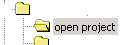

|
 » zur Startseite / back to
homepage
Im openproject Bereich meiner Seite stelle ich
regelmässig Projektergebnisse (Dokumente,
Präsentationen, Programme) aus Studium, Job und
Freizeit online. Vielleicht ist ja etwas
Interessantes für Sie dabei.
On this part of my site - the openproject page - from
time to time I publish results(documents,
presentations, programs) from university, jobs or
other projects. Maybe one or another piece might be
helpful to you.
|
|
[2003/12]
|
SolutionBroker - Konzeption und Implementierung eines verteilten Hilfesystems von Robert Sösemann
|
|
|
(Diplomarbeit bei IBM Entwicklung und Forschung, Böblingen)
Schlagworte:
Hilfesystem, XML Web Services, Java, Stacktrace, Client-Server, Collaboration, Matching
Aus dem Inhalt:
Um als Anwender bei Softwareproblemen einfacher eigene Lösungen zur Verfügung stellen zu können oder auf existierende Lösungen zugreifen zu können, wurde ein neues Hilfesystem konzipiert und realisiert, dessen Grundidee von IBM stammt.
Es sieht vor, Lösungen zentral und inklusive einer um Kontextinformation erweiterte Problembeschreibung abzulegen. Durch ein einheitliches und maschinenlesbares Format werden Unklarheiten vermieden und eine automatische Lösungssuche möglich. Ein automatischer Vergleich der Problembeschreibungen identifiziert dabei ähnliche Probleme und gibt nur potentiell relevante Lösungen aus.
»
Ausarbeitung [ PDF Dokument
- 1.7 Mb]
|
|
[2002/12]
|
Vorstellung der Arbeit "Recommendation systems: a probabilistic analysis" von Robert Sösemann
|
|
|
(Seminararbeit für die Veranstaltung "Algorithmen für das WWW" an der
Universität Tübingen)
Schlagworte:
Recommendation Systems, Collaborative Filtering, Data Mining, Graphenalgorithmus
Aus dem Inhalt:
Die vorliegende Seminararbeit versteht sich als zusammenfassender Überblick eines Artikels des IBM Almaden Research Centers.
Unter dem Titel „Recommendation Systems: a probabilistic analysis - zu finden auf [www.almaden.ibm.com/cs/k53/algopapers/focs98rec.ps] - beschreiben dort die Autoren R. Kumar et al. ein einfaches und wahrscheinlichkeitstheoretisch fundiertes Modell für passives Collaboratives Filtering.
Statt einer einfachen Wiederholung der Ergebnisse, liegen die Schwerpunkte dieser Ausarbeitung in der Einleitung und Motivation des Themenkomplexes und einer Vorstellung der beschriebenen Algorithmen.
»
Ausarbeitung [ PDF Dokument
- 260 Kb]
»
Präsentation [ PDF Dokument
- 560 Kb]
|
|
[2002/04]
|
Entwurf und Implementierung eines
konfigurierbaren Wrappers für XML-basierte
Informationsquellen von Robert Sösemann
|
|
|
(Studienarbeit am Lehrstuhl
"Datenbanken und Informationssysteme" der
Universität Tübingen)
Schlagworte:
Information Broker, Mediator,
Wrapper, XQuery, XSLT, XPath, Java, Xalan,
JDOM
Aus dem Inhalt:
Neben der Implementierung des Wrappers in Java lagen die
Schwerpunkte der Arbeit auf zwei Entwurfsentscheidungen:
! Syntax der Konfigurationsdateien (Welche Informationen muessen sie liefern, um
Nutzeranfragen abzubilden?)
! Eignung verschiedener XML-Abfragemechanismen (Welche Sprache erfüllt die
Erfordernisse besser - XSLT oder XQuery?)
»
Ausarbeitung [ PDF Dokument
- 365 Kb]
»
Präsentation [ PDF Dokument
- 350 Kb]
»
XMLWrapper Anwendung/Quellcodes/Javadoc
[ ZIP Archiv - 4
Mb]
|
|
[2002/02]
|
Wissensmanagement in der Abteilung
- Austausch/Erhalt von unternehmenswertvollem
Wissen von
Robert Sösemann & Hendrik Wehrum
|
|
|
(Case Study für Seminar
"Wissensmanagement in Unternehmen" an der
Universität Tübingen)
Schlagworte:
Knowledge Management,
implizites Wissen, Best Practices, Lessons Learned,
Mikroartikel, Wissensdiffusion,
Unternehmenskultur
Aus dem Inhalt:
Die folgende Case Study und der dazugehörige
Vortrag, soll diese neuen Erfordernisse genauer
erörtern und Methoden vorstellen, wie sowohl
implizites als auch explizites Wissen nutzbringend
innerhalb großer Abteilungen augetauscht,
gespeichert und haltbar gemacht werden können.
Die Persistenz(=personenungebunde Haltbarkeit) von
Wissen, ist vor allem dann wichtig, wenn vermieden
werden soll, dass mit Ausscheiden erfahrener
Mitarbeiter das Unternehmen auch seine wertvolle
Expertise verliert. Es werden Wege genannt, wie
derartiges Wissen an neue Mitarbeiter weitergegeben
werden kann. Auch wird auf die nötigen
Änderungen in der Unternehmenskultur und
-organisation eingegangen.
» Case Study
[ HTML Dokument - 22 Kb]
»
Präsentation [ PDF Dokument
- 110 Kb]
|
|
[2001/06]
|
Das Semantic Web von Robert Sösemann
|
|
|
(Ausarbeitung für Seminar
"Konzepte von Informationssystemen" an der
Universität Tübingen)
Schlagworte:
Semantic Web, Ontologie, RDF,
XMLSchema, SHOE, DAML, Dublin Core
Aus dem Inhalt:
A Abstract 2 B Szenario Warum wir ein besseres Web
brauchen 2 1 Das WWW heute (2001) 2 2 Das WWW morgen
(2010) 3 3 Motivation 3 C Das Semantic Web 4 1
Einführung 4 2 Wissensrepräsentation
(Ontology) 5 3 Wissensverarbeitung (Logic) 5 4 Autom.
Beweisführung (Proof) 6 5 Vertrauen/Sicherheit
(Trust) 6 D Technische Umsetzungen 7 1
Ressourcendefinition mit XML/RDF 7 2 Ontologien mit
RDF Schema/DAML+OIL 9 3 Weitere Umsetzungen (SHOE,
Dublin Core) 11 E Ausblick und Fazit 12 F Semantic
Web Tools & APIs 13 G Literaturangaben 14 H
Empfohlene WWW-Resourcen zum Thema 14
» Ausarbeitung
[ PDF Dokument
- 205 Kb]
» Ausarbeitung
(alternativ) [ HTML Dokument
- 90 Kb]
|
|
[2001/03]
|
Business Plan
"LetsStudyAbroad.com" by Robert Sösemann &
Mark Malik
|
|
|
(Project work for "Management Of
Multimedia Business" course at Cal State
Hayward)
Keywords:
Web Community, Communication
Platform, Infotainment, Microsites, dotcom
Contents:
The company creates an Internet community attractive
to international students (in the start-phase only
European students) coming to the U.S. for educational
purposes. Being by their sides as a strong guide and
giving all the really helpful information, it is
peace of mind what we offer to the students and their
parents. Knowing the ropes first hand is our greatest
assets. Timesaving is the second thing that comes to
mind. We help in clearing the red tape and showing
shortcuts to the most important to the least, almost
luxurious tasks.
»
Business Plan [ PDF document
- 205 Kb]
»
Business Plan (alternative) [ HTML document
- 60 Kb]
|
|
[2001/02]
|
Feasibility Study
"requipper.com" by Robert Sösemann &
Rolando Navaro
|
|
|
(Project work for "ECommerce
Marketing" course at Cal State Hayward)
Keywords:
Online auction, B2B, eBay,
dotcom
Contents:
With our website requipper.com we want to create a
business-to-business market place where companies,
that quickly have to get rid of their office
inventory and new founded start-ups can virtually
meet and trade for the best price. Similar to B-to-C
auction sites like e-Bay or yahoo auctions, we
support and secure the whole process of easily
finding, bidding and transacting the items and the
money transactions.
The following paper was written to prove the
feasibility of a fictitious web-business called
requipper.com. This covers definition of the target
audience, their specific needs and how the service is
going to fulfil those needs by describing the key
features of the site.
»
Feasibility Study [ PDF document
- 660 Kb]
»
Feasibility Study (alternative) [ HTML
document - 540 Kb]
|
|
[2001/02]
|
Cookies - Current webtracking
technology by
Robert Sösemann
|
|
|
(Mini-Presentation for
"Telecomunication Design" course at Cal State
Hayward)
Keywords:
Web Tracking, Cookies,
Firewall, Cookie Blocker
Contents:
What are cookie? Pros and Cons of Cookies. Ways to
secure privacy Ressources.
» Mini-Presentation
[ Flash movie embedded in HTML document - 40
Kb]
|
|
[2000/02]
|
Dynamische Webapplikationen mit
Java Servlets
von Robert Sösemann
|
|
|
(Projektarbeit für
"Programmieren im Internet" an der Universität
Tübingen)
Schlagworte:
Servlets, Java, JSP,
Webshop
Aus dem Inhalt:
Was sind Servlets und wie funktionieren sie
Beschreibung des Projekts CD-Shopping Bestandteile
der Applikation Kommunikationsmodel der Komponenten
Ausblick/Fazit
» Präsentation
[ HTML Präsentation - insg. 640 Kb]
» Servlet
CD-Shop Anwendung/Quellcode [ ZIP Archiv -
105 Kb]
|
|
[1999/10]
|
Kurzkonzept Web Community
"nixgeht.de"
von Robert Sösemann, Horst Rechner, Daniel
Brintzinger)
|
|
|
(Projektarbeit für Seminar
"ZDF-Online" an der Universität
Tübingen)
Schlagworte:
Web Community, Newsgroup,
Kundenbindung
Aus dem Inhalt:
Das deutschsprachige Webangebot 'nixgeht.de' soll
eine verlässliche Anlaufstelle für alle
unbedarften Computeranfänger sein. In einer
zeitgemäßen und unkomplizierten Form der
Newsgroups im Web sollen sich die Neueinsteiger
„verstanden“ und mit Hilfe von
Gleichgesinnten Antworten auf ihre Fragen
bezüglich Hard- und Software bekommen.
» Kurzkonzept
[ PDF Dokument - 65 Kb]
» Kurzkonzept
(alternativ) [ HTML Dokument
- 65 Kb]
|
|
[1996/02]
|
Utopia and anti-utopia - Thomas
Morus "Utopia" and George Orwell's "1984"
compared by
Robert Sösemann
|
|
|
(Facharbeit LK Englisch,
Albert-Einstein-Gymnasium, München)
Keywords:
Utopia, Anti-Utopia, Thomas
Morus, George Orwell, "1984"
Contents:
A Introduction: B About the two books: I.) Thomas
Morus and his work "Utopia" 1.) Biography 2.)
Surroundins and intentions for the book 3.) Summary
of "Utopia" II.) George Orwell and his work "1984"
1.) Biography 2.) Surroundings and intentions for the
book 3.) Summary of "1984" C Utopia and anti-utopia:
I.) Definition of the term utopia II.) Detailled
describtion of Morus positive world III.) Definintion
of the term anti-utopia IV.) Detailled describtion of
Orwells terrific world D Dependance of the authors
points of view from time and experience I.)
Comparison of seemingly different aspects 1.) Loss of
Individuality 2.) Ideology II.) Short outline: What
became reality and what not? E Annotations and
Bibliography:
» Ausarbeitung
[ HTML Dokument - 75 Kb]
|
|
Copyright © 1996-2026 Robert
Sösemann. Alle Rechte vorbehalten. / All
rights reserved.
|